In the last chapter you learned how to
write functions that used
if statements. But, what if your function needs
to test several conditions? Well, you can use
Java's logical operators to combine several Boolean
conditions into a single test and use that as
your if condition.
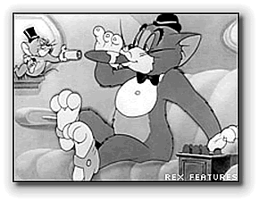
Nick Parlente, the Stanford Computer Science professor who hosts the Nifty Assignments panel at the annual SIGCSE conference, is something of an expert on squirrels, like those that hang around the OCC Computing Center.According to Nick, "when squirrels get together for a party, they like to have cigars," much like Tom and Jerry from this old cartoon created when I was a kid.
Now, according to Nick, "a squirrel party is successful when the number of cigars is between 40 and 60, inclusive. Unless it is the weekend, in which case there is no upper bound on the number of cigars."
Let's use Java to write a function named cigarParty()
using the if statement to give our furry friends
some decision-making help. You'll find the documentation for the
function you need to write in the LogicalOperators.java
file in this chapter's code folder:
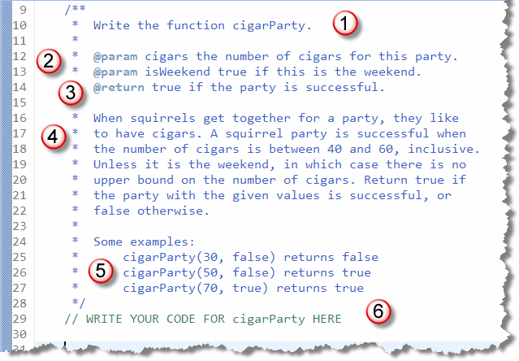
Just like the string functions you worked on earlier, this problem:- Tells you the name of the function you need
to write; in this case,
cigarParty. - Tells you the name and type of each parameter.
In this case, the first parameter, named
cigarsis a number. (This doesn't tell you what kind of number, but the examples section later on can provide some additional hints.) The second parameter,isWeekendistrueorfalseso you know that it has to be aboolean - Tells you what kind of value the function is going
to return. Since this function returns
trueorfalse, we know it's abooleanfunction.
Before Everything: Write a Skeleton
At this point, without knowing anything else, you can write
a syntactically correct function, that compiles and can be
tested. Add your code at the section marked 6 in the previous
picture:
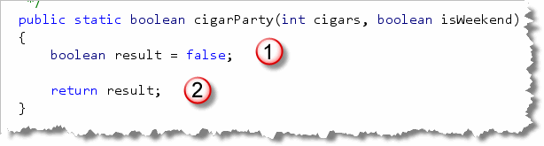
Notice how we can write the header by knowing the return type, name and parameters. We write the "skeleton" body by:- Creating a
resultvariable of the same type as the function return type and initializing it to some value. (Usuallyfalse,0or the emptyString, depending on the function type.) - Returning the
resultat the end of the function.
Once this is done, you can run the Check program to test the function. You'll see it passes some of the tests, (since there are only two possible return types with a Boolean function), but fails others. To complete the problem, you'll need to go back to the problem description and use some logic to actually solve the problem.
Attempt 1: One Condition at a Time
Before we look at using the logical operators, let's see if we can solve the problem the "old-fashioned way". To do that, you just need to break it into several discreet steps, and think of one part of the problem at once. Let's just consider the upper bounds.
Since our result starts
out as false, let's start by handling the
parameter isWeekend. If it's the weekend,
we know that there is no upper limit on the number of
cigars. Let's not worry about the lower limit just yet
and say that, if it's the weekend, the party is a
success.
Here's the code we can use to implement that assumption:
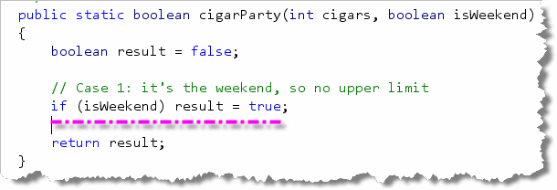
When we submit the problem, you'll see that more than half of the tests now pass: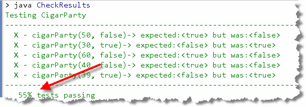
Attempt 2: Refine the Results
Now we've handled the case where it's the weekend. Let's handle the
upper bounds when it's not a weekend. We know in that case,
our party will be successful if there are no more than 60 cigars.
Here's how we'd implement Step 2:
 When we submit the problem, you'll see that we now pass about 64% of the
tests. More importantly, the only tests we fail are those where the
number of cigars is less than 40:
When we submit the problem, you'll see that we now pass about 64% of the
tests. More importantly, the only tests we fail are those where the
number of cigars is less than 40:
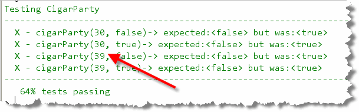
Attempt 3: Handling the Failure
Our two previous if statements took care of all of
the upper bounds conditions. We are correctly returning
false any time the squirrels are given more than
40 cigars on a weekday. Adding one last condition to re-set
the result back to false in those cases where there
are too few cigars, leaves us with this:
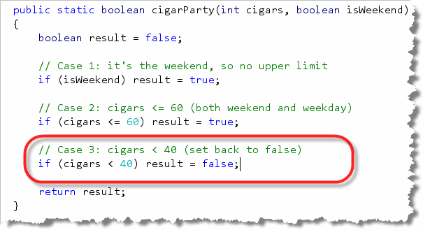
Since that handles all the remaining problems, testing now shows no errors: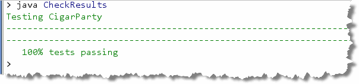
Attempt 4: The Logical Operators
Although you can solve most logic problems using "brute force" like this, most of them will be much easier (not to mention shorter), once you pull the logical operators out of your toolbox.
Notice that, in this case a party is successful if the
number of cigars is at least 40 and no more than 60
on the weekdays. We can combine that into a single
condition, like this:
 Notice the parentheses surrounding the last two relational
expressions. Remember that
Notice the parentheses surrounding the last two relational
expressions. Remember that && has higher
precedence than ||. The parentheses make sure
that the last two conditions are checked first, and the result
(either it is the weekend or the maximum number of cigars is
not more than 60) is combined with the first condition (the
number of cigars is at least 40). If both of those
are true, then the party is a success.
If you remove the parentheses, though, you are saying that
if the cigars are at least forty and it is the weekend,
or, if the cigars are not more than 60, the party is a success.
Of course that means that the party will be successful with
no cigars anytime, and a weekend party with a hundred cigars
would be a failure:
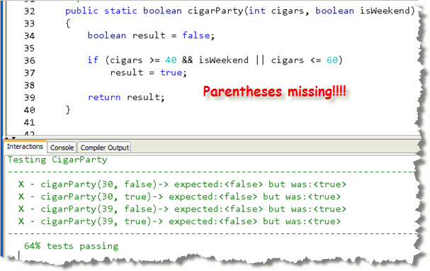
Who knew parentheses could be such a big deal?A Final Simplification
You'll notice that the solution for the Cigar Party first
creates a result variable, sets it to false
and then returns it. That's a good habit to get into when you
are first developing a function; working step-by-step to develop
a skeleton helps you to avoid skipping a step.
After you finish, though, you may want to simplify things a
little, by just using the Boolean test expressions as the
return value for your function. After all, if the condition
is true you return true, and, if the
condition is false you return false.
That means you can rewrite cigarParty() like
this:
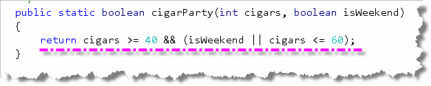
This is a very common form for Boolean or predicate functions.Hands On: Multiple Choice
Now, let's look at a problem that requires you to handle several different branches. In DrJava, open up MultipleChoice.java which is part of this chapter's code folder. Then, take a look at the first problem, dateFashion.
For this problem, you and your date are trying to get a table at a restaurant. The parameter "you" is the stylishness of your clothes, in the range 0 to 10, and "date" is the stylishness of your date's clothes. The result getting the table is encoded as an int value with 0 meaning no, 1 meaning maybe, and 2 meaning yes.
If either of you is very stylish, (8 or more), then the result is 2 (definitely a yes!). There's one little exception, though: if either of you has style of 2 or less, then the result is 0 (no). Otherwise the result is 1 (maybe).
Step 1: The Skeleton
Before you get too emotionally wrapped up in whether or not
you're going to get into the restaurant, take a deep breath,
relax, and, just like you've done with every other method,
write the skeleton:
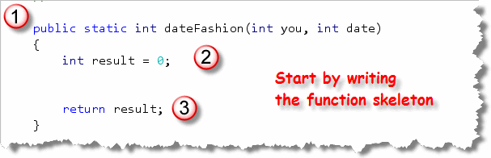
As with all methods:- Start with the header. Since this function will return 0, 1, or 2,
the return type should be
int. Both parameters,youand yourdatewill also beintparameters, since they'll contain the stylishness of your clothes (0..10). - The next step is always to create the return variable. Since
this function returns an
int, create anintvariable namedresultand set it to 0. (That doesn't mean that you're a pessimist, assuming you won't get in; it just means you have to set the default return type to something!) - Finally, to make the function syntactically correct,
you need to end the function with a
returnstatement as shown here.
Now that you've created the skeleton, you can try out the Check
program tests to see what you need to fix:
 Wow 50% Of course we only passed for the times we were turned down
for a table, so that's kind of depressing.
Wow 50% Of course we only passed for the times we were turned down
for a table, so that's kind of depressing.
Step 2: Turned Down
It might seem silly to check for a situation where we're turned down, since we already passed all of those tests. However, the other tests really rely on the fact that neither you nor your date have committed a fashion faux-pas.
Here's what the first-pass condition should look like:
 Of course, there's no reason testing again, since all the answers
are still zero.
Of course, there's no reason testing again, since all the answers
are still zero.
Step 3: Very Stylish
Now that we've eliminated any chance of getting turned down, though,
we can look at our two remaining options. The easiest to handle is
if we are very stylish. It's important to add this as a "ladder" or
else if statement, and not as another if
or as an else.
Here's the code for this step:
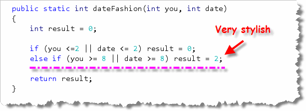
Now, if you run the tests, you'll see that only the maybe cases are left: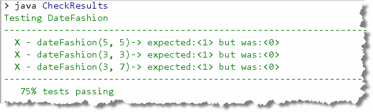
Step 4: Maybe
Since we've taken care of both the stylish and the "off" days,
it's time to handle the normal case: not too marvelous and not
too dorky, but just right. Since that's everything else,
you don't use else if, but end the multiple-selection
ladder with an else like this:
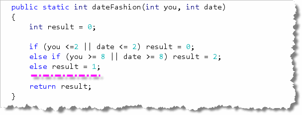
A Final Refinement
Many of you (like me) are kind of uneasy about first setting and then
re-setting result to 0. After we've finished, you can see that
setting result to the default case (1 or maybe) can actually
make your code a little simple, since it allows you to eliminate
the final else statement like this:

Formatting Options
As I mentioned earlier, you don't need to use braces if
the body of your if statements contains only a
single line. However, if you don't use braces, you should generally
try to keep the statement on one line, as I've done here.
Hands On: Nested Selection
 Let's look at a different selection problem that require you to handle several different
branches. We'll solve this one by using nested
Let's look at a different selection problem that require you to handle several different
branches. We'll solve this one by using nested if
statements, instead of sequential if statements.
You'll find this problem in MultipleChoice.java also,
immediately following the dateFashion() problem.
This second problem is named parrotTrouble.
For the parrotTrouble problem, we have a loud talking parrot. The "hour" parameter is the current hour time in the range 0..23. We are in trouble with our neighbors if the parrot is talking and the hour is before 7 or after 20. Your function should return true if we are in trouble.
Step 1: Guess What?
I don't even have to tell you this part, do I? By now you should
be able to whip out that skeleton without even being asked:
 Of course, since it's a Boolean function, you should pass about
half of the tests. If you don't, just change the default value
for
Of course, since it's a Boolean function, you should pass about
half of the tests. If you don't, just change the default value
for result from false to true.
(A little test-taking tip!)
Step 2: Examine the Parameters
Notice now that we have two kinds of parameters; in other words, we're going to test two things:
- Whether the parrot is talking or singing
- What time it is
That's kind of like the income tax example, where we first
tested the filing status and then tested the income level.
In this case, we want to write an if statement that
tests if the bird is talking. If it is, we'll set result
to false like this:
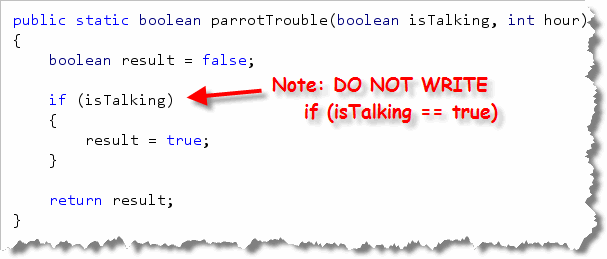
Of course none of you would think of writingif (isTalking == true)
because that would be redundant, right?
Good. I thought not! Now let's test our code:
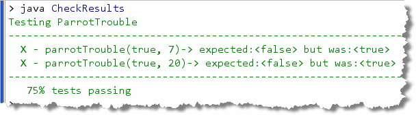
Well, 75% is pretty good, but it looks like ourif statement
actually broke some tests that worked before. It says that we're in trouble
even though it's now 7 AM, and our parrot should be able to squawk without
causing a ruckus!
Looks like we need a nested if statement!
Step 3: A Nested Selection
After we check to see if the parrot is talking, we need to check
again and see if it's actually "no-talking" time. We do that by
adding a nested if statement to our code,
like this:
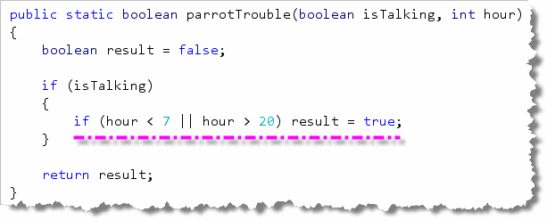
For More Practice ...
In this section, you got some hands-on practice with
techniques for handling more complex selections. If you have
several conditions to test, you can combine several Boolean
conditions into one by using the logical operators.
If you have several different branches you want to execute
you can use sequential or nested if
statements.
To get more practice with these kinds of problems, you can complete the additional exercises assigned by your instructor.